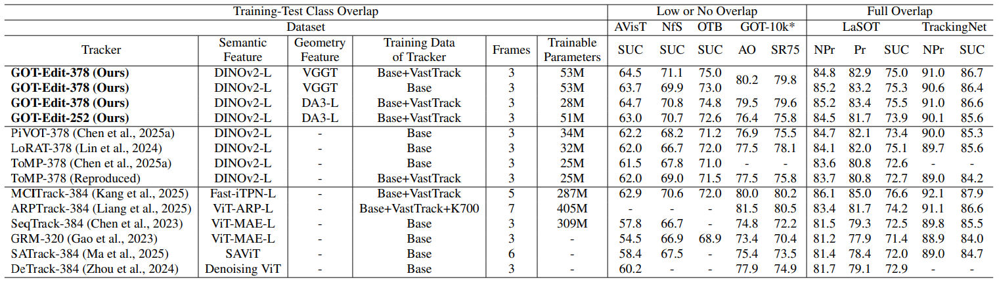

GOT-Edit: Geometry-Aware Generic Object Tracking via Online Model Editing

GOT-Edit facilitates the understanding of 3D geometry to aid generic object tracking from 2D streaming inputs. It predicts semantic and geometric model weights concurrently to incrementally adapt the tracking model. Through online model editing, it ensures geometry-aware, semantic-preserving updates to the tracking model.

Comparison with state-of-the-art methods.
Abstract
Human perception for effective object tracking in a 2D video stream arises from the implicit use of prior 3D knowledge combined with semantic reasoning. In contrast, most generic object tracking (GOT) methods primarily rely on 2D features of the target and its surroundings while neglecting 3D geometric cues, which makes them susceptible to partial occlusion, distractors, and variations in geometry and appearance. To address this limitation, we introduce GOT-Edit, an online cross-modality model editing approach that integrates geometry-aware cues into a generic object tracker from a 2D video stream. Our approach leverages features from a pre-trained Visual Geometry Grounded Transformer to enable geometric cue inference from only a few 2D images. To tackle the challenge of seamlessly combining geometry and semantics, GOT-Edit performs online model editing with null-space constrained updates that incorporate geometric information while preserving semantic discrimination, yielding consistently better performance across diverse scenarios. Extensive experiments on multiple GOT benchmarks demonstrate that GOT-Edit achieves superior robustness and accuracy, particularly under occlusion and clutter, establishing a new paradigm for combining 2D semantics with 3D geometric reasoning for generic object tracking.
Given only an initial annotated bounding box for the target object, GOT-Edit is capable of continually tracking the object in dynamic scenes, even when the object is unseen or under adverse conditions.
Given only an initial annotated bounding box for the target object, GOT-Edit is capable of continually tracking the object in dynamic scenes, even when the object is unseen or under adverse conditions.
Paper
BibTeX
@inproceedings{
got_edit_iclr26,
title={{GOT}-Edit: Geometry-Aware Generic Object Tracking via Online Model Editing},
author={Shih-Fang Chen and Jun-Cheng Chen and I-hong Jhuo and Yen-Yu Lin},
booktitle={The Fourteenth International Conference on Learning Representations},
year={2026}
}